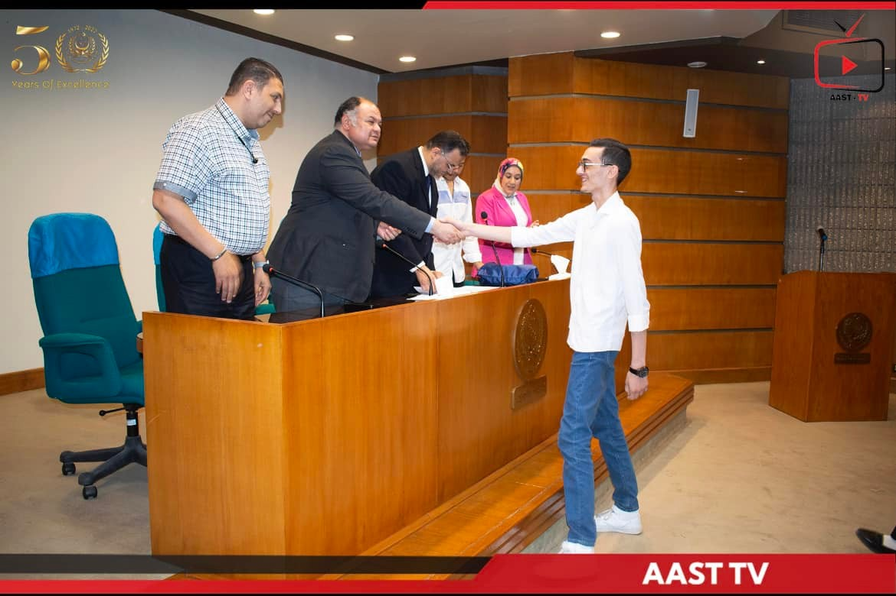
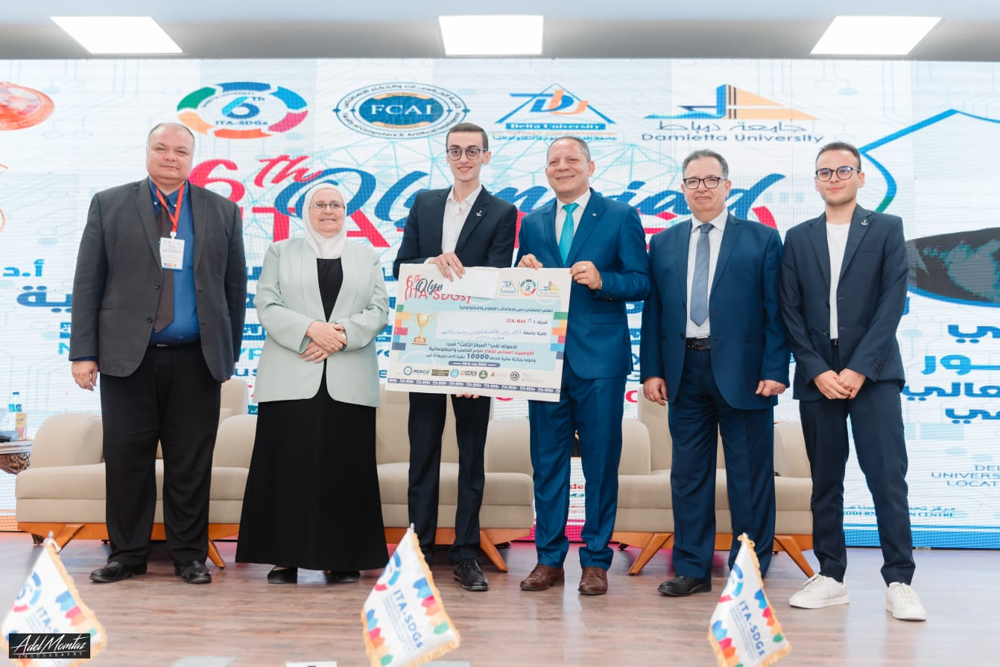
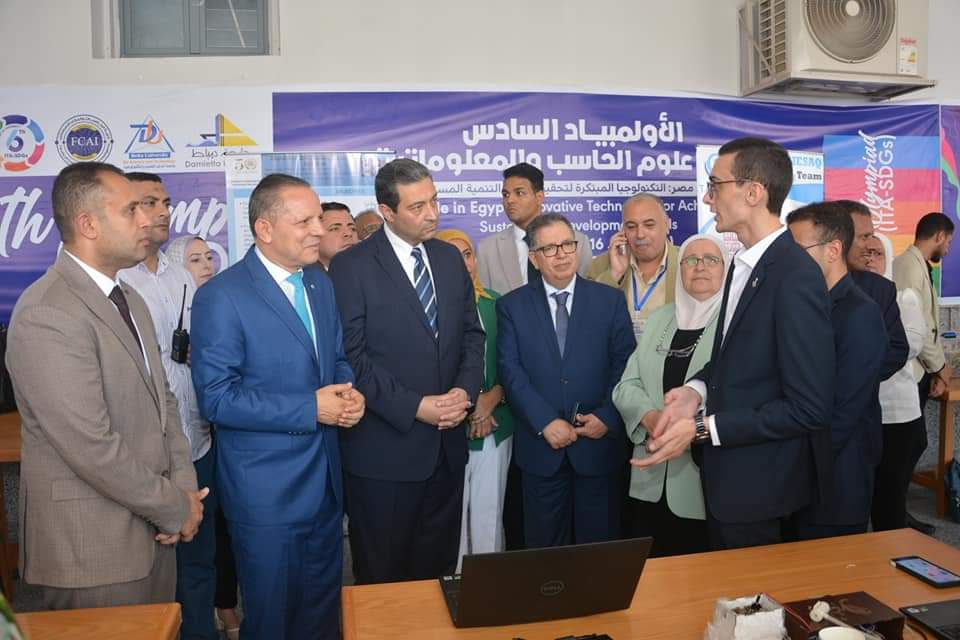
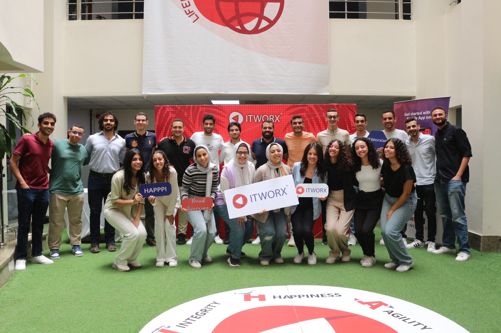

<section id="about">
    <div class="about-container">
        <h2>About Me</h2>
        <p>
            I am Ahmed Emara, a Junior Software Engineer passionate about coding and building innovative solutions.
            With a background in full-stack development and experience in technologies such as React, Node.js, and more,
            I aim to contribute to impactful projects and continue learning and growing in the tech industry.
        </p>

        <section class="academic-journey">
            <h3>Academic Journey</h3>
            <p>
                During my time at the Arab Academy for Science, Technology & Maritime Transport, I topped my class for
                two consecutive semesters.
                
                I also participated in the ECPC competition, where I applied my problem-solving skills and collaborated
                with like-minded peers.
            </p>
            <p>
                Alongside my studies, I worked as a Problem Solving and Data Structure Instructor, preparing students
                for programming competitions such as ECPC. It was a fulfilling experience to help students hone their
                skills and excel in their academic challenges.
            </p>
            <p>
                For my graduation project, I developed a platform using Blockchain and NFTs in Higher Education to
                manage educational credentials. The project received funding from ITIDA, and we proudly secured 3rd
                place in the 6th Olympiad, held at Delta and Damietta universities.
            </p>
            <div class="olympiad-images">
                <h4>6th Olympiad</h4>
                
                
            </div>
        </section>

        <section class="experience">
            <h3>Experience</h3>
            <p>
                I completed an internship at ITWorx, where I worked on developing a mobile AI-based comic app. During my
                internship, I gained valuable experience in Android development using Kotlin and Android Studio, as well
                as Flutter for cross-platform development.
            </p>
            <p>
                This internship allowed me to apply my academic knowledge to real-world projects, enhance my
                problem-solving skills, and collaborate with professionals in the tech industry. I also had the
                opportunity to contribute to the development of an AI-driven application that showcased my ability to
                integrate new technologies into innovative solutions.
            </p>
            <div class="internship-image">
                
            </div>
        </section>
    </div>
</section>